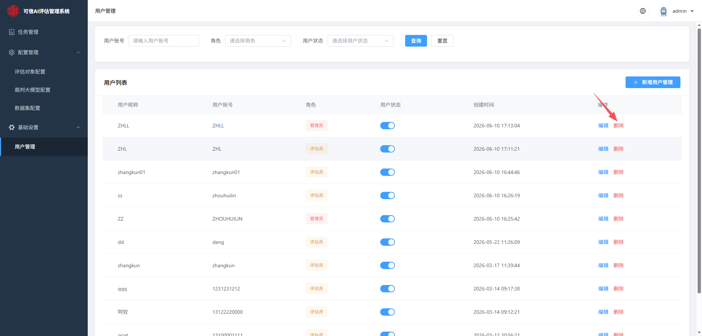
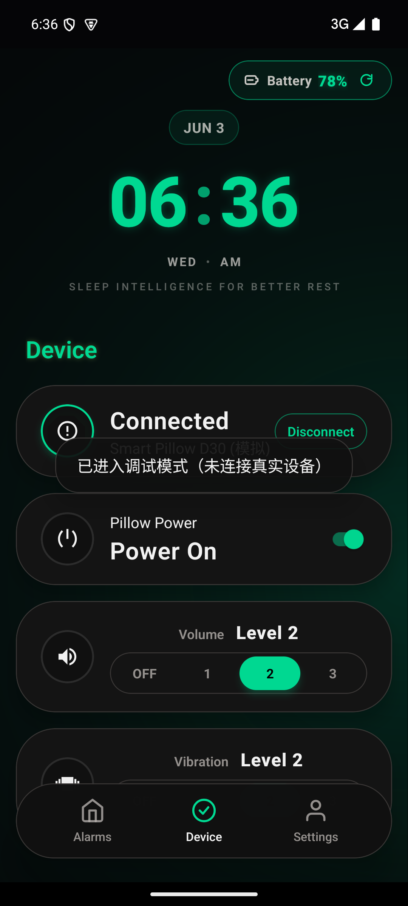
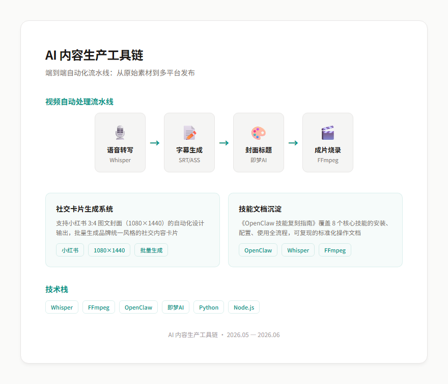
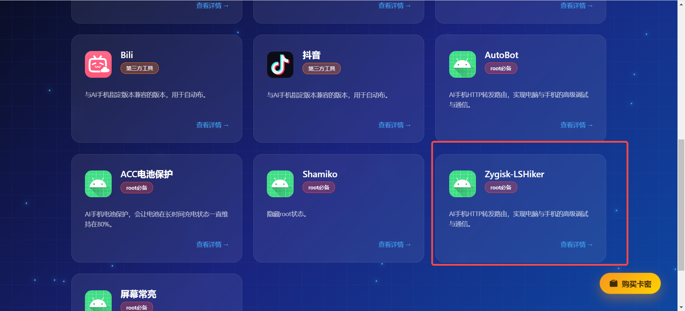
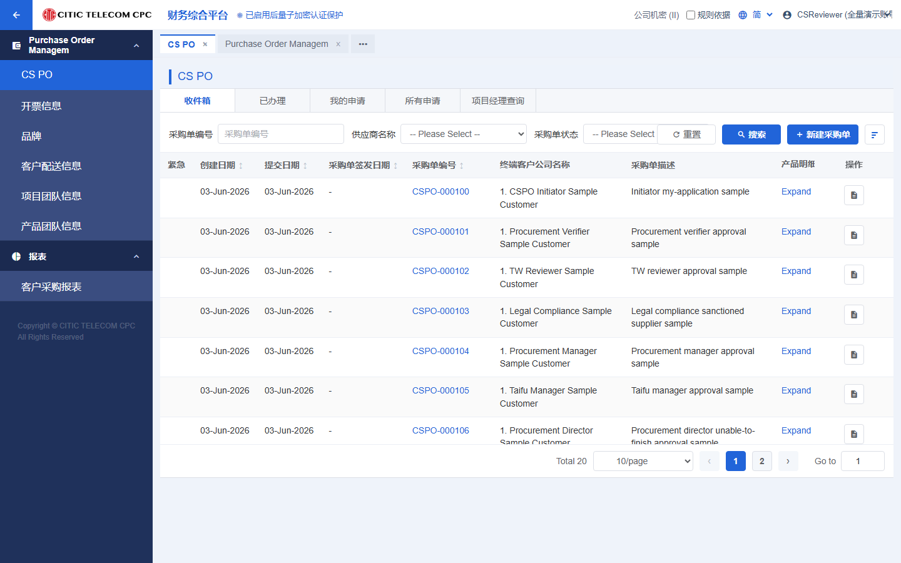
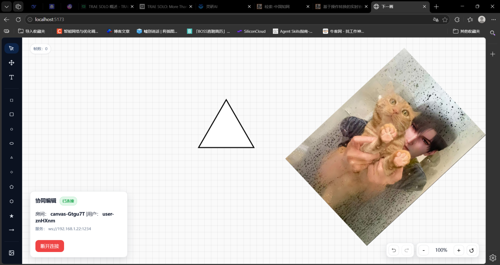

PRACTICE 02
AI 内容工厂
多智能体自动化生产
部署多智能体 + 企业 RAG 知识库，把内容生产从「人工日更」变成「一句话出片」。
- 智能体部署：负责 OpenClaw、Hermes 等多 Agent 的部署配置与企业知识库搭建
- 一句话触发：员工在飞书发一句话，Agent 自动采集并分析抖音、小红书、TikTok 对标内容
- 自动成片：从文案、素材匹配到自动剪辑，产出达到运营可直接发布质量
这些数字背后，是可复用、可交付、可验收的真实产出。
从需求到落地的全流程实践——每个项目我都能讲清「为什么这么做、结果怎么样」。

0→1 主导，甲方为某中信旗下国企。基于开源框架 opik 配置裁判模型（LLM-as-a-judge），对 AI 应用输出按准确性 / 幻觉 / 安全等维度统一打分、出结构化评估报告，本地部署保障数据不出内网。

React Native + BLE 蓝牙双平台。一个人从需求确认、UI 细节、PRD、HTML 原型，到需求/开发评审、排期与测试验收全程闭环；设计了断连场景仍可离线响铃的闹钟状态机。

主导搭建并运营公司多智能体内容产线：以 OpenClaw、Hermes 为核心，串联 Whisper、FFmpeg、即梦AI，用 MCP 打通 Agent 与企业工具，把「从素材到成片」做成自动化流水线。

AI + RPA 自动化营销 SaaS，四大模块（获客 / 销冠 / 客服 / 矩阵）。我负责版本迭代、小程序上线、客户演示与培训，并落地了一家香港跨行业集团客户的「系统 + 代运营」。

某中信旗下国企财务综合平台的采购订单模块。独立完成中英双语需求规格说明书，设计工作台 / 采购订单 / 预算费用 / 库存 / 付款报表全套 HTML 高保真原型，3 轮评审通过。

本科毕设，React 19 + Konva.js + Yjs CRDT 的多人实时协作画板。双层渲染 100+ 元素稳定 60 FPS、CRDT 同步 <50ms、离线持久化。产品经理里少有的「自己能写全栈」的技术底气。
不只会描述 AI 能力，更把 Agent、RAG 与自动化真正放进产品和业务流程里。
部署多智能体 + 企业 RAG 知识库，把内容生产从「人工日更」变成「一句话出片」。
主导企业微信慢病健康管理 AI 客服，以 Agent 承接真人客服工作；测试过程中，甲方与真实客户均未察觉对话方是 AI。
用 AI 打通「需求 → 可交互原型 → 交付文档」全链路，成果已通过甲方评审。
自建 4 个 Coze 智能体组成「产品助理矩阵」，把重复工作交给 Agent，自己聚焦判断与决策。
用裁判模型给 AI 输出统一打分，让质量可量化、可追溯——这是可信 AI 评估系统的核心方法。
AI 不是目的，而是解决真实问题的一种能力。产品经理要做的，是把这种不确定的能力变成可落地、可衡量、可持续迭代的产品。
AI 产品经理的核心，不是背模型名词，而是把不确定的模型能力，转化为可落地、可衡量、可持续迭代的业务产品。
先判断用户痛点是否高频明确、AI 是否优于规则或人工，再回答它最终是增收、降本还是提效；不为使用 AI 而制造场景。
产品设计必须同时定义能力边界、低置信度处理、权限与安全约束，并为高风险场景配置拒答、降级和人工兜底。
用离线评估集验证版本，用线上任务成功率与业务指标观察价值；持续分类 Bad Case、建立回归集，让每次优化都有证据、可复现。
模型越大不一定越适合业务。结合准确率、延迟、并发、数据安全与 Token 成本做选型，关注每解决一个业务问题的成本和长期 ROI。
一套把「模糊需求」变成「可交付、可验收」AI 产品的稳定打法，从场景洞察到评估迭代。
深入真实业务场景，把用户和甲方的痛点抽象成清晰、通用、可落地的需求，为项目定方向。
结合 AI 能力做方案设计与选型（Prompt / RAG / 微调），用 HTML 高保真原型让各方「看见」后再决策。
统筹排期、跨团队协同、管理需求变更，把干系人的干扰挡在开发之外，推动里程碑按期交付。
用评估体系度量 AI 输出质量（离线 + 在线、分维度评分），基于数据和反馈持续迭代，而非交付即结束。
围绕「把前沿 AI 落地为可交付产品」展开的一套能力。
如果你在找一个「既懂产品流程、又真的会用 AI」的应届产品经理，欢迎随时联系我。